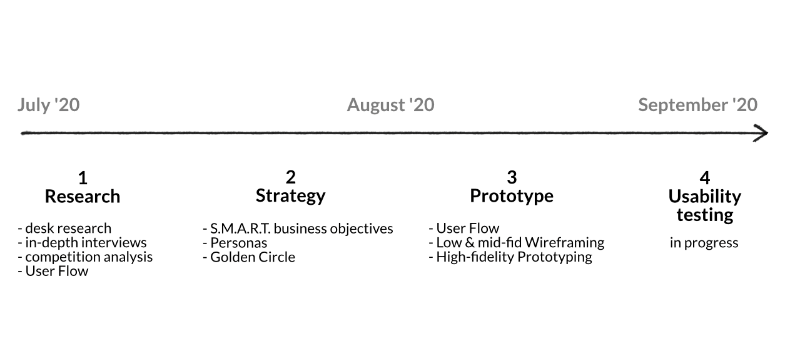

Redesign diet and training webpage
The “Forma od kuchni” is a team of a dietician and trainer promoting a healthy lifestyle. They deal with motor preparation in sport, personal training, nutrition in sickness, sports nutrition, and weight loss. Through an individual approach to each client, they adapt their diet and training to their abilities, goals, health, and abilities. They not only change the figure but also have a real impact on the creation of healthy habits.
The problem
User problems
- complicated process of searching for information about cooperation
- there is too much text, too few pictures in the cooperation section
- it takes too long to find information on the price
Business problems
- too many calls for help in finding information about cooperation, price list
- price list hidden in different tabs, which makes it impossible to quickly link the prices of services to the client
- no visible distinction between dietetics and training
- lack of space to bookmark a shop
My role
- conducted domain research and competitive analysis
- conducting workshops with the client
- personas, journey maps and user flows
- prototyping
- UI design and new style quide
- cooperation with a programmer
Tools
- notion (planning, notes)
- miro (user flows, sketching, strategy wireframes)
- google sheets (analysis of competition)
- figma (prototyping, ui design, style quide)
The solution
Redesign the website both for desktop and mobile by improving the user experience of appointment and to facilitate the user's search for the information needed. Creating separate subpages for working with a dietician and a trainer. Adding a price list and shop.

The design process
Research
Getting to know “Forma od kuchni”
I started the project by interview with the client. Thanks to this conversation I got to know the company, the people behind it, the company's business plan and goals. I got to know the problems faced by the website owners and customers. After the meeting I was able to plan the process of work on the project.
Key informations about the company
- deals with individual dietary cooperation
- personal training, motor preparation in sport
- dietary and sporting education
- brand active in social media
Some quotes from the interview
- “We care about users who want to change for longer, who want to take care of their diet and fitness not just fit into their dream dress and then return to the old habits.”
- “We want to have a real impact on our clients' habits, adapting their diet and training to their goals, health, and abilities. “
User Flow
Once I knew "Forma od kuchni" I started to analyze their webpage and User Flows. Below is the short version of the flow I focused on. It's a moment when client want to find informations about cooperation and make an appointment to dietician.

Due to the need to download a PDF, the process of contracting with a dietician/trainer wasn't intuitive. It took a lot of time to read the information. The PDF consisted of 7 pages filled with text. It informed me exactly about the cooperation process but was overwhelming due to the amount of data and text.
Strategy
I conducted 2 workshops with the client during which we focused on the company's strategy, values, personnel development, development plans for the coming months and years. During the workshops we used methods:
- Golden Circle
- S.M.A.R.T. business objective
- Customer Journey map
Thanks to the workshops I found out what values guide the form. In which direction they want to develop their business and which clients they care about most. I also found out what kind of problems the users encountered on the website.
Thinks to improve
- Redesigning the process of appointment with a dietician or trainer.
- Shortening the description of cooperation, presenting it in an interesting and encouraging way
- Adding a shop cap with ready-made diets for those who do not want to work together for a long time, but to have a balanced diet, appropriate calories and recipes.
- To prepare price lists and add them in a separate menu tab.
- The standardisation of design. An identification system that can be easily applied on both the website and the social media.
Prototype
Based on the findings in previous phases, I began creating rough sketches of the design.
The solution in detail
Clear home page
A new representative homepage informs the user of what services he will find on this page. Links to the dietician and training subpages allow us to quickly find information that interests us.

Summary description of the offer on the home page
Short descriptions of what a dietitian and a trainer with pictures do are interesting and give an insight into what you can look for in the cooperation section.
When subscribing to the newsletter, the customer receives in return an e-book with a sample diet.
Coherent design
I have standardized the graphics and typography on the website.Colored highlights and frames refer to the colors used in the logo. Thanks to these simple graphic elements, the website, and social media can now produce visually consistent content.
A clearer description of the cooperation
The short description of cooperation is more user-friendly. It is not overwhelmed by the amount of information geared towards starting the cooperation.
Price list
I added a price list tab. Now you do not have to search the whole
website to find out about the price of cooperation.
Thanks to business analysis, we have changed the form of the price
list from payments for a single service to long-term cooperation.

Shop
Now you can buy pre-established diets in the shop. Ready-made diets allow the dietitian to focus on working with people who want to collaborate for a long period.
Next Steps & Key Learnings
The next step will be usability testing with potential customers. Through this cooperation, I have learned how business analysis tools and templates are useful in User Experience work. Thanks to them I learned about the company's goals, plans, and motivations. Together with my client, I created a business goal for the coming years. The analyses allowed me to focus on things that are necessary and needed not only for potential customers of the website but above all for business.